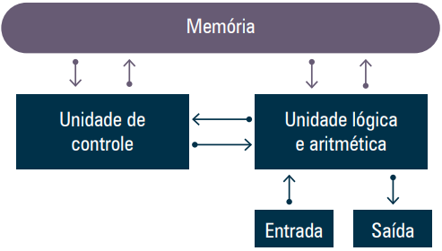
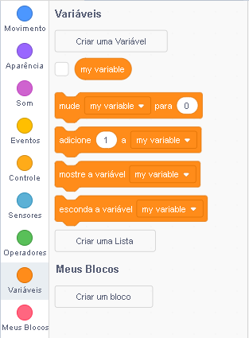
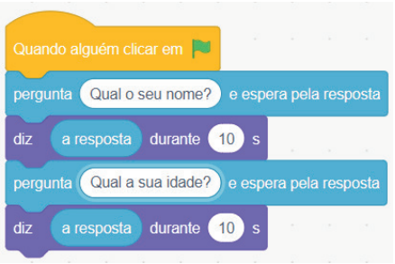
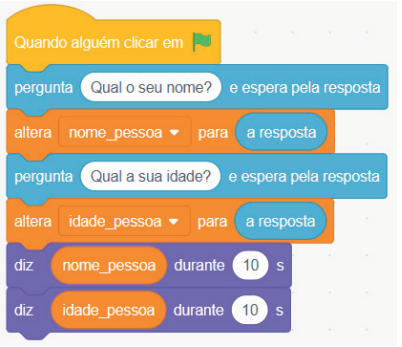

Os computadores funcionam com base em uma lógica binária, ou seja, só entendem sinais elétricos de dois tipos: ligados (1) e desligados (0). Esses sinais são processados por milhões de transistores presentes nos componentes eletrônicos. Isso significa que todo tipo de informação — texto, imagem, áudio — precisa ser convertido em números binários para que o computador possa processá-los.
Para organizar esse processo, foi desenvolvida uma estrutura chamada Arquitetura de von Neumann, usada até hoje. Essa arquitetura define que o computador é composto por três unidades principais:
Além disso, há os dispositivos de entrada (como teclado e mouse) e de saída (como monitor e impressora), que completam o sistema.
A arquitetura permite que um programa seja carregado na memória, interpretado e executado, gerando respostas. Esse ciclo básico é representado pelo modelo:
Entrada → Processamento → Saída
O Scratch é uma linguagem de programação visual que permite criar histórias, jogos e animações através de blocos gráficos que se encaixam como peças de LEGO. Esses blocos estão organizados por categorias que ajudam o programador a encontrar o que precisa.
Figura aqui (interface do Scratch com áreas destacadas)
No Scratch, toda programação começa com um evento, geralmente o bloco “quando a bandeira verde for clicada (when green flag clicked)”. A partir disso, o usuário pode adicionar blocos de ação que se conectam em sequência.
Variável é um espaço reservado na memória para armazenar dados temporários. Podemos pensar em uma variável como uma "caixa com etiqueta", onde a etiqueta é o nome da variável, e o conteúdo da caixa é o valor armazenado.
Uma variável pode conter diferentes tipos de dados, como números e textos. No Scratch, podemos criar variáveis através da aba Variáveis (variables), clicando em “Criar uma variável (Make a variable)”. Depois de criada, ela aparece na lista de blocos e pode ser usada em diferentes partes do código.
_ (underscore);nomeUsuario, idade).Para interagir com o usuário, o Scratch possui o bloco pergunte [] e espere (ask [] and wait), que exibe uma pergunta na tela e aguarda o usuário digitar uma resposta. O valor digitado é armazenado temporariamente no bloco resposta (answer).
Se quisermos utilizar esse valor mais de uma vez, devemos transferi-lo para uma variável usando o bloco defina [variável] para [resposta] (set [variable] to [answer]). Caso contrário, o conteúdo será sobrescrito ao realizar uma nova pergunta.
As operações matemáticas são feitas com os blocos da categoria Operadores (operators). Esses blocos são ovais e podem ser encaixados dentro de outros blocos. As principais operações disponíveis são:
(+)(-)(×)(÷)Um exemplo prático seria somar dois números digitados pelo usuário. Para isso:
num1);num2);num1 + num2;resultado) e o exibe usando o bloco diga (say).Esse mesmo fluxo pode ser adaptado para outras operações matemáticas, bastando trocar o operador.
Veja o seguinte vídeo e acompanhe no seu computador para melhor entendimento: link
Neste capítulo, foram apresentados os fundamentos das variáveis e operações aritméticas dentro do ambiente Scratch, sempre respeitando a lógica de entrada, processamento e saída conforme o modelo de von Neumann.
Aprendemos que variáveis são essenciais para guardar dados temporários, e que as operações matemáticas permitem transformar esses dados em novos resultados. Com a prática contínua, esses conceitos se tornam a base para resolver problemas cada vez mais complexos por meio da programação.